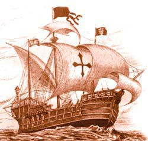
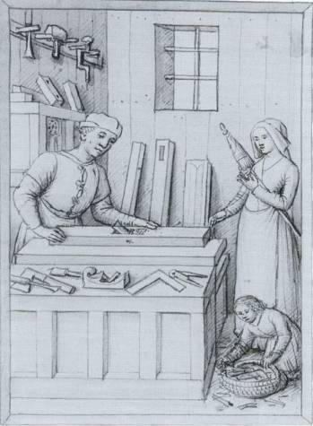

6. La Edad Media.
Este periodo comienza en Europa con las invasiones bárbaras terminando con la caída del Imperio Romano de Oriente (1453). Las innumerables guerras, epidemias, y preocupaciones por la supervivencia, provocaron el estancamiento tecnológico de Europa. Así, a nivel técnico, y al margen de la arquitectura (construcción de templos, monasterios y castillos) es un periodo poco fructífero (salvo para as civilizaciones árabes y china). En este sentido, los monjes de los monasterios desempeñaron un papel fundamental en lo relativo a la conservación del conocimiento acumulado en periodos anteriores. La mayoría de las innovaciones tecnológicas no son más que el perfeccionamiento de tecnologías de la época clásica (Grecia y Roma) o importadas del Islam o de Oriente.
Pocos son los nombres que se pueden destacar de esta época individualmente en Ciencia o en Tecnología:
- Jabir ibn Hayyan, Roger Bacon y Alberto Magno escribieron los primeros tratados de química.
- Avicena (médico y filósofo de origen persa) recopiló en su obra "El Canon" conocimientos médicos y farmacéuticos.
- Bi Sheng (1040) inventa los caracteres móviles de imprenta.
OBJETOS TÉCNICOS Y TECNOLOGÍAS INCORPORADAS
- El papel: desarrollado en China en el s. II a.C. no llega a Europa hasta el s. XII introducido por los árabes. El uso del papel supuso la desaparición del pergamino como soporte de escritura, lo que propició la mejora de la calidad del grafismo y su conservación, revolucionando las técnicas y útiles empleados por los copistas.
- La imprenta: La técnica de impresión con bloques de madera ya era conocida por los chinos en el s. III a.C. El método era práctico sólo para la impresión de pocos ejemplares. Johannes Gutenberg desarrolló un método más durable, económico, capaz de realizar grandes tiradas, basado en tipos de metal fácilmente reemplazables (caracteres móviles). Gutenberg empleó cuatro inventos conocidos en su tiempo: los caracteres móviles, el papel, la tinta y la prensa. Su desarrollo fue un gran salto hacia la divulgación del conocimiento, abrió el camino de la Reforma Protestante, divulgó saberes antes reservados sólo a grupos selectos, y sentó las bases de la sociedad de la información que hoy vivimos.
- Avances en la navegación: a finales de la Edad Media (s. XV) se introduce el empleo de la brújula en la navegación (inventado por los Chinos) basada en las propiedades magnéticas del imán natural o magnetita, conocido ya por los griegos. La brújula permitió la navegación fuera de la vista de las costas. Los portugueses introdujeron mejoras como la carabela de casco estrecho y alargado, y las velas latinas y redondas, que facilitaban las maniobras.
- Otros: la cultura árabe desarrolla algunos procesos químicos como la obtención de ácido sulfúrico, del ácido nítrico, perfumes y colorantes (s. VII). Otras tecnologías incorporadas son la rotación de cultivos (s. VI) para mejorar las cosechas, el reloj mecánico de pesas (s. IX), herraduras de los caballos.... el compás, el papel moneda y la pólvora aparecen en China en el s. X, los molinos de viento (s. X-XI, importados de China), utilización militar de la pólvora en China en el s. XIII, las gafas (s.XIV)...
RELACIÓN TECNOLOGÍA-SOCIEDAD: SOCIEDAD FEUDAL
- Descentralización: Con la caída del Imperio Romano de Occidente los individuos buscaron la seguridad en torno a la figura de un líder, el señor feudal, propietario de la tierra que les ofrecía protección a cambio de trabajo e impuestos.
- Disminución de la población: la extrema pobreza, las guerras y los problemas de salud pública (grandes epidemias como la peste bubónica) acarrean una gran merma en la población.
- Gremios. Los gremios surgieron en Europa durante la Baja Edad Media amparados en la pujanza económica de las ciudades, donde los artesanos se agruparon según su oficio (herreros, curtidores, pescadores, bordadores, alfareros....).El trabajo manual se fue sustituyendo poco a poco por el trabajo mecanizado, con la ayuda de máquinas o herramientas como el telar mecánico, el torno de roscar o la talladora de limas. Sus fines tuvieron un carácter económico y social, consistiendo en controlar la oferta y los precios de los productos que manufacturaban, pero también velando por la prosperidad y seguridad de los miembros que los integraban. Regulaban la actividad laboral, la formación y aprendizaje de sus asociados, estableciendo una estricta jerarquía entre ellos (aprendices, oficiales, maestros). En cierto modo, los gremios constituyeron el antecedente de los sindicatos, pues amparaba a sus miembros en caso de desgracias como la viudez, orfandad o enfermedad, a través de pensiones, asignaciones o el mantenimiento de hospitales. Desarrollaron igualmente labores de carácter religioso expresadas en la veneración de sus santos particulares y la creación de cofradías.
Obra publicada con Licencia Creative Commons Reconocimiento No comercial Compartir igual 4.0